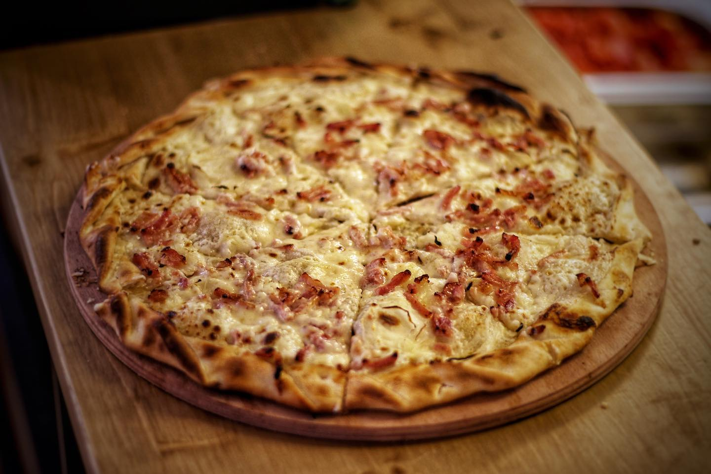
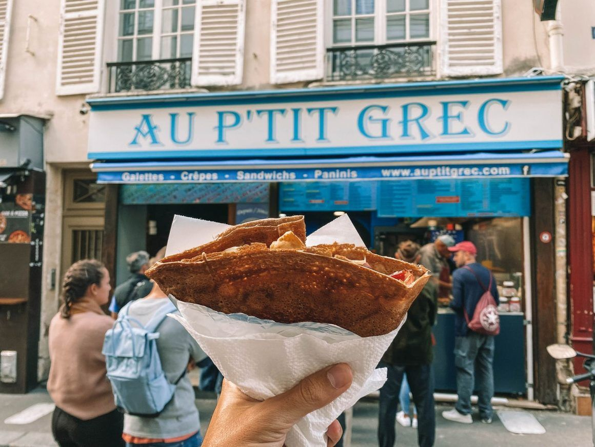
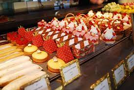

París es la capital de Francia y una de las ciudades más bellas del mundo. Conocida como la Ciudad de la Luz, es un destino turístico popular para personas de todo el mundo.
El tráfico en París puede ser horroroso. Por ello, aquí te dejamos un vídeo resumen para que conozcas todos los trucos para moverte en la capital.
| L'Alsacien | |
|---|---|
|
Si quieres probar la gastronomía de Alsacia, este es tu sitio. Bueno Bonito y Barato. No puedes irte sin probar su "tarte flambée". |
 |
| Crepes au p'tit grec | |
|
Las mejores crepes de la ciudad están aquí. Un pequeño local ideal para tomar algo rápido, rico y barato. No te arrepentirás! |
 |
| Pastelería Ladurée | |
|
La gastronomía parisina por sus delicados dulces. Ladurée es una de las pastelerías más conocidas de la ciudad, famosa por sus deliciosos macarrons y sus hojaldres crujientes. Si se te está haciendo la boca agua solo con leerlo, no puedes faltar. Eso sí, prepárate para esperar grandes colas... |
 |
| Saludar |
|
|
|---|---|---|
| Expresiones del día a día |
|
|
| Expresiones útiles |
|